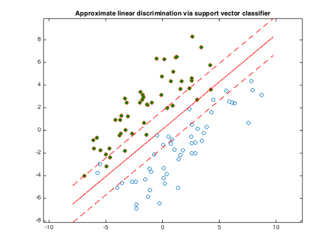

% Section 8.6.1, Boyd & Vandenberghe "Convex Optimization" % Original by Lieven Vandenberghe % Adapted for CVX by Joelle Skaf - 10/16/05 % (a figure is generated) % % The goal is to find a function f(x) = a'*x - b that classifies the non- % separable points {x_1,...,x_N} and {y_1,...,y_M} by doing a trade-off % between the number of misclassifications and the width of the separating % slab. a and b can be obtained by solving the following problem: % minimize ||a||_2 + gamma*(1'*u + 1'*v) % s.t. a'*x_i - b >= 1 - u_i for i = 1,...,N % a'*y_i - b <= -(1 - v_i) for i = 1,...,M % u >= 0 and v >= 0 % where gamma gives the relative weight of the number of misclassified % points compared to the width of the slab. % data generation n = 2; randn('state',2); N = 50; M = 50; Y = [1.5+0.9*randn(1,0.6*N), 1.5+0.7*randn(1,0.4*N); 2*(randn(1,0.6*N)+1), 2*(randn(1,0.4*N)-1)]; X = [-1.5+0.9*randn(1,0.6*M), -1.5+0.7*randn(1,0.4*M); 2*(randn(1,0.6*M)-1), 2*(randn(1,0.4*M)+1)]; T = [-1 1; 1 1]; Y = T*Y; X = T*X; g = 0.1; % gamma % Solution via CVX cvx_begin variables a(n) b(1) u(N) v(M) minimize (norm(a) + g*(ones(1,N)*u + ones(1,M)*v)) X'*a - b >= 1 - u; Y'*a - b <= -(1 - v); u >= 0; v >= 0; cvx_end % Displaying results linewidth = 0.5; % for the squares and circles t_min = min([X(1,:),Y(1,:)]); t_max = max([X(1,:),Y(1,:)]); tt = linspace(t_min-1,t_max+1,100); p = -a(1)*tt/a(2) + b/a(2); p1 = -a(1)*tt/a(2) + (b+1)/a(2); p2 = -a(1)*tt/a(2) + (b-1)/a(2); graph = plot(X(1,:),X(2,:), 'o', Y(1,:), Y(2,:), 'o'); set(graph(1),'LineWidth',linewidth); set(graph(2),'LineWidth',linewidth); set(graph(2),'MarkerFaceColor',[0 0.5 0]); hold on; plot(tt,p, '-r', tt,p1, '--r', tt,p2, '--r'); axis equal title('Approximate linear discrimination via support vector classifier'); % print -deps svc-discr2.eps
Calling SDPT3 4.0: 204 variables, 100 equality constraints
------------------------------------------------------------
num. of constraints = 100
dim. of socp var = 3, num. of socp blk = 1
dim. of linear var = 200
dim. of free var = 1 *** convert ublk to lblk
*******************************************************************
SDPT3: Infeasible path-following algorithms
*******************************************************************
version predcorr gam expon scale_data
NT 1 0.000 1 0
it pstep dstep pinfeas dinfeas gap prim-obj dual-obj cputime
-------------------------------------------------------------------
0|0.000|0.000|9.1e-01|8.3e+01|4.0e+04| 1.435458e+02 0.000000e+00| 0:0:00| chol 1 1
1|1.000|0.982|8.8e-08|1.6e+00|8.9e+02| 1.425358e+02 1.331723e+00| 0:0:00| chol 1 1
2|1.000|0.565|1.0e-07|6.9e-01|3.7e+02| 9.529609e+01 1.477846e+00| 0:0:00| chol 1 1
3|1.000|0.164|3.9e-07|5.8e-01|2.8e+02| 6.293819e+01 1.440057e+00| 0:0:00| chol 1 1
4|1.000|0.836|2.2e-07|9.5e-02|5.5e+01| 2.760459e+01 1.192363e+00| 0:0:00| chol 1 1
5|0.937|0.799|2.8e-08|1.9e-02|9.8e+00| 7.384521e+00 1.062058e+00| 0:0:00| chol 1 1
6|1.000|0.164|5.4e-08|1.6e-02|5.4e+00| 5.109728e+00 1.100383e+00| 0:0:00| chol 1 1
7|1.000|0.421|1.2e-08|9.2e-03|3.0e+00| 3.756532e+00 1.239469e+00| 0:0:00| chol 1 1
8|1.000|0.383|4.3e-09|5.7e-03|1.6e+00| 2.728459e+00 1.332853e+00| 0:0:00| chol 1 1
9|1.000|0.319|1.5e-09|3.9e-03|1.2e+00| 2.497279e+00 1.448720e+00| 0:0:00| chol 1 1
10|0.974|0.430|6.0e-10|2.2e-03|6.2e-01| 2.109819e+00 1.542722e+00| 0:0:00| chol 1 1
11|1.000|0.266|1.3e-10|1.6e-03|5.5e-01| 2.109294e+00 1.601086e+00| 0:0:00| chol 1 1
12|0.807|0.330|8.8e-11|1.1e-03|4.0e-01| 2.010704e+00 1.636742e+00| 0:0:00| chol 1 1
13|1.000|0.279|7.6e-11|7.8e-04|3.0e-01| 1.951053e+00 1.668699e+00| 0:0:00| chol 1 1
14|1.000|0.363|8.3e-11|5.0e-04|2.1e-01| 1.903685e+00 1.707380e+00| 0:0:00| chol 1 1
15|1.000|0.379|1.8e-11|3.1e-04|1.3e-01| 1.865529e+00 1.741217e+00| 0:0:00| chol 1 1
16|1.000|0.433|2.0e-11|1.8e-04|7.4e-02| 1.843174e+00 1.772015e+00| 0:0:00| chol 1 1
17|1.000|0.661|1.5e-11|5.9e-05|2.3e-02| 1.828356e+00 1.806159e+00| 0:0:00| chol 1 1
18|0.974|0.948|3.0e-12|3.1e-06|1.2e-03| 1.825797e+00 1.824667e+00| 0:0:00| chol 1 2
19|0.932|0.452|1.8e-11|2.4e-06|6.5e-04| 1.825736e+00 1.825121e+00| 0:0:00| chol 1 2
20|1.000|0.952|5.0e-12|9.3e-07|1.7e-04| 1.825775e+00 1.825606e+00| 0:0:00| chol 2 1
21|0.933|0.949|3.0e-12|2.4e-07|5.4e-05| 1.825728e+00 1.825673e+00| 0:0:00| chol 2 2
22|1.000|0.985|4.1e-11|7.8e-08|2.5e-06| 1.825701e+00 1.825699e+00| 0:0:00| chol 2 1
23|1.000|0.988|4.4e-11|3.6e-09|6.5e-08| 1.825700e+00 1.825700e+00| 0:0:00|
stop: max(relative gap, infeasibilities) < 1.49e-08
-------------------------------------------------------------------
number of iterations = 23
primal objective value = 1.82570024e+00
dual objective value = 1.82570018e+00
gap := trace(XZ) = 6.50e-08
relative gap = 1.40e-08
actual relative gap = 1.39e-08
rel. primal infeas (scaled problem) = 4.40e-11
rel. dual " " " = 3.57e-09
rel. primal infeas (unscaled problem) = 0.00e+00
rel. dual " " " = 0.00e+00
norm(X), norm(y), norm(Z) = 1.3e+01, 4.2e-01, 1.7e+00
norm(A), norm(b), norm(C) = 5.4e+01, 1.1e+01, 2.4e+00
Total CPU time (secs) = 0.33
CPU time per iteration = 0.01
termination code = 0
DIMACS: 2.4e-10 0.0e+00 4.3e-09 0.0e+00 1.4e-08 1.4e-08
-------------------------------------------------------------------
------------------------------------------------------------
Status: Solved
Optimal value (cvx_optval): +1.8257
